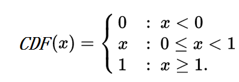
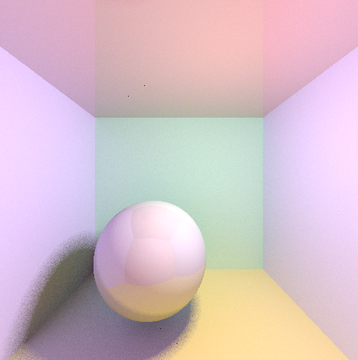

计算着色点的间接光照
在计算一个着色点的间接光照时，理论上可以通过从着色点往上半球各个方向发射无数条光线，并计算这些光线返回的Rdiance值，就可以得到这个着色点的间接光照。但因为计算机的计算速度问题，不可能给一个着色点生成“无数”条光线，在工程实现上必然是得做成有限数量的光线，且很悲哀的，这个数量值不会很大。
那么如何用有限的光线，得到最真实的间接光照值呢？答案是用蒙特·卡罗积分。蒙特·卡罗积分的特性是，采样数越多就越接近真实积分值，而这正是做间接光照计算所需要的。譬如我们可以根据实际需求，设置采样数量，数量大就出图慢、精度高，数量小就出图快但粗糙。
下面开始数学环节。
计算间接光照的蒙特·卡罗方法
生成间接光照的各个光线时，需要有一个随机变量\(\omega \)，这个随机变量就是光线的“出射角度”，更严格地说应该是“立体角”。
对于一个半球，它的总立体角是2π，那么关于\(\omega \)的pdf函数记为\(p(\omega ) \)，而在上一篇文章中我们知道pdf的积分等于1，所以有：
\[ \int _{\omega = 0 }^{2π}p(\omega )d\omega = 1 \]
又因为我们希望\(\omega \)是符合均匀分布的，从而使得间接光照采样是概率无偏的，那么\(p(\omega ) \)是一个常数：
\[ p(\omega ) = C \]
\[ C\int _{\omega = 0 }^{2π}d\omega = 1 \]
这个方程是可以解出来的:
\[ C\int _{\omega = 0 }^{2π}d\omega = C(2π - 0 ) = 1 \]
\[ p(\omega ) = C = \frac {1}{2π} \]
成功解决了第一个事情：随机变量\(\omega \)的pdf函数。
下一个问题是：把立体角\(\omega \)转换成球形角\(\phi 、\theta \)，从而方便实际计算：
\[ p(\omega ) d\omega = p(\theta , \phi) d\theta d\phi \]
其中，\(d\omega \)的转换方法在立体角(Solid Angle)详解中已经阐述过了，公式为：
\[ d\omega = sin\theta d\theta d\phi \]
所以有：
\[ p(\omega ) d\omega = p(\theta , \phi) d\theta d\phi \]
\[ p(\omega ) sin\theta d\theta d\phi = p(\theta , \phi) d\theta d\phi \]
\[ \frac {1}{2π} sin\theta d\theta d\phi = p(\theta , \phi) d\theta d\phi \]
\[ \frac {1}{2π} sin\theta = p(\theta , \phi) \]
\[ p(\theta , \phi) = \frac {sin\theta}{2π} \]
\( p(θ,ϕ)\) 被称为联合概率分布(joint probability distribution)。此时，我们需要实现对θ,ϕ各自的独立采样，所以需要把\( p(θ,ϕ)\)拆分开，求出\( p(θ)\) 和 \( p(ϕ) \)。幸运地是，有简单的方法可以实现同样的效果，那就是用边缘分布(marginal distribution)。计算过程如下：
\[ p(θ) = \int _{\phi = 0}^{2π}p(θ,ϕ)d\phi = \int _{\phi = 0}^{2π}\frac {sin\theta}{2π}d\phi = 2π \frac {sin\theta}{2π} =sin\theta \]
\[ p(ϕ) = \int _{θ = 0}^{ \frac {π}{2} }p(θ,ϕ)dθ = \int _{ θ = 0}^{ \frac {π}{2} }\frac {sin\theta}{2π}dθ = \frac {-cos\theta}{2π} | _{0}^{\frac {π}{2}}= \frac {-cos \frac {π}{2} }{2π} - \frac {-cos0 }{2π} = \frac {1}{2π} \]
\(p(ϕ)\)也可以用联合概率公式来求解：
\[ p(ϕ) =\frac {p(θ,ϕ)}{p(θ)} = \frac { \frac {sin\theta}{2π} }{ sin\theta } = \frac {1}{2π} \]
到了这里，事情还没完，还有2个东西要学习：
CDF, Cumulative distribution function 和 Inverse transform sampling。
CDF 累积分布函数
公式如下：
\[ CDF(x) = P( -\infty < X \leq x ) \]
大写X是指随机变量，小写x指的是参数，P是概率函数，因此CDF(x)的含义是，随机变量X的值小于等于x的概率。
对于连续随机变量X，CDF可以用积分形式表示：
\[ CDF(s) = \int _{-\infty }^{s}pdf(x)dx \]
从基本定义延伸出来的公式：
\[ P(a < x \leq b) = CDF(b) - CDF(a) = \int _{ a }^{b}pdf(x)dx \]
CDF的性质：
\[ \lim _{x\to -\infty }CDF(x) = 0 \]
\[ \lim _{x\to +\infty }CDF(x) = 1 \]
实例，取值范围是[0,1]的随机变量X的CDF：

CDF一般也可以用\(F_{X}\)表示。
Inverse transform sampling 逆采样方法
步骤一：获得一个均布分布的随机变量u，这个u必须落在[0,1]范围内，并把这个u解释为“概率值”（概率的范围也是[0,1])。
步骤二：获得一个CDF(x)函数
步骤三：计算使得下面的不等式成立的x的最大值：
\[ CDF(x) = P( -\infty < X \leq x ) = F_{X}(x) < u \]
因为逆采样本质上是一个函数，变量是u，解是x，所以用这个不等式来表达逆采样方法是不方便的，更常见的做法是用\(F_{X}^{-1}(u) \)来表示逆采样。\(F_{X}^{-1}(u) \)的完整表达式一般用下确界或上确界等式表示：
上确界形式：
\[ F_{X}^{-1}(u) = \sup \lbrace F_{X}(x) < u \rbrace \]
下确界形式：
\[ F_{X}^{-1}(u) = \inf \lbrace F_{X}(x) \geq u \rbrace \]
\(F_{X}^{-1}(u) \)的重要性质：u的每一个取值都有唯一的x与之对应。使得这个性质的原因是CDF是一个递增的函数。
因此，在实际应用中，可以先随机一个u，再通过CDF函数计算出对应的x，又因为u是均匀采样(uniform sample)的，于是x也是均匀采样的。
再回到间接光照的问题
前面已经得到了\( p(θ)\) 和 \( p(ϕ) \):
\[ p(θ) = sin\theta \]
\[ p(ϕ) = \frac {1}{2π} \]
现在可以推导它们的CDF函数了：
\[ CDF(θ) = \int _{0 }^{θ}p(θ)dθ = \int _{0 }^{θ}sin\theta dθ = (-cos\theta) |_{0}^{θ} = -cos\theta - (-cos0) = 1 - cos\theta \]
\[ CDF(ϕ) = \int _{0 }^{ϕ}p(ϕ)dϕ = \int _{0 }^{ϕ}\frac {1}{2π}dϕ = \frac {1}{2π}\int _{0 }^{ϕ}dϕ = \frac {ϕ}{2π} \]
即：
\[ F_{θ}(θ) = 1 - cos\theta \]
\[ F_{ϕ}(ϕ) = \frac {ϕ}{2π} \]
然后就是推导这两个CDF的逆采样公式，设：
\[ u_{1} = 1 - cos\theta \]
\[ cos\theta = 1 - u_{1} \]
\[ \theta = cos^{-1}(1 - u_{1}) \]
即：
\[ F_{θ}^{-1}(u_{1}) = cos^{-1}(1 - u_{1}) \]
再设：
\[ u_{2} = \frac {ϕ}{2π} \]
\[ ϕ = u_{2}2π \]
即：
\[ F_{ϕ}^{-1}(u_{2}) = u_{2}2π \]
汇总一下：
\[ F_{θ}^{-1}(u_{1}) = cos^{-1}(1 - u_{1}) \]
\[ F_{ϕ}^{-1}(u_{2}) = u_{2}2π \]
总结一下：只要生成2个在[0,1]范围的符合均匀分布的随机数\( u_{1}、u_{2}\)，就可以得到均匀分布的\(θ、ϕ\)了，就是这么简单。
有了\(θ、ϕ\)后，就可以代入3维的极坐标公式，得到3维的笛卡尔坐标：
\[ x= sinθ cosϕ \]
\[ y= cosθ \]
\[ z= sinθ sinϕ \]
坐标(x,y,z)必然落在圆心在原点、半径为1、法向量为(0,1,0)的半球的球面。
有了(x,y,z)坐标，就可以生成沿着半球面的均匀的出射光线了。之后的就是光线追踪的问题了。本文不表。
实际测试
把蒙特卡洛应用到我的离线渲染器中，效果如下：

有看起来比较奇怪的边缘噪点。暂时先这样吧。
参考资料
博主将十分感谢对本文章的任意金额的打赏^_^